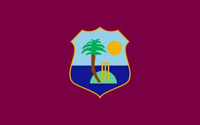
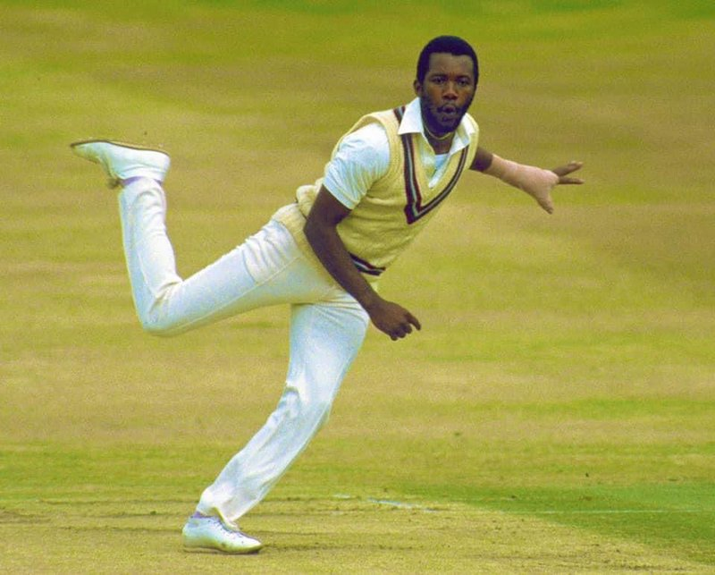
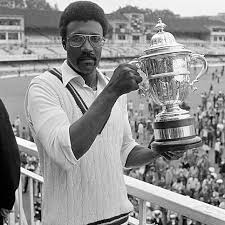

 | |
this is the best bowler of west indies Malcolm Marshal played between 1977 to 1991 and held a few records at the time he held the highest wickets taken till 1998 at 550s |
 | this is the best batsmen of west indies viv richard played during 1974 to 1991 and scored around 15000 just from odi and test matches but scored a crazy 70000 from everything |

| other great players clive llyod another great player captained at 1983 and played from 1964 to 1983 |
 | other great players gordon greenidge,joel garner and andy roberts are other great players joel garner mostly known to his height could bowl alot more close to the batsman gordod greenide and andy roberts are other great opening batsmen and all rounders |

|